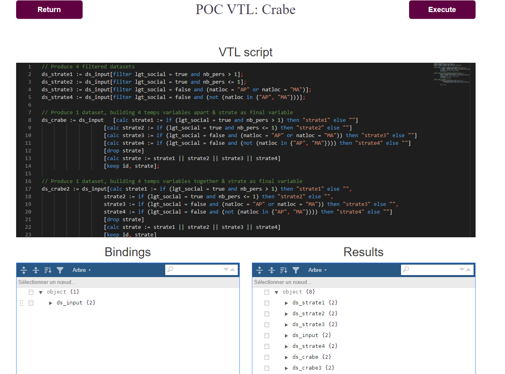

Expert Group on
Shared Tools
October 2020
VTL-Insee
Franck Cotton (franck.cotton@insee.fr)
Nicolas Laval (nicolas.laval@insee.fr)
Slides
Context
Insee's strategy
Align on international standards (even imperfect ones)
Active metadata all along the statistical process
Embrace open data and open source
As a result
Complete overhaul of our survey data acquisition system
Work started recently on the dissemination phase
Why VTL?
After focusing on information models
Switching to process models and meta-information
Need to represent processes at the logical level
VTL strategic choice in the ESS
Guidelines
Priorities (descending order)
Edit code (highlighting, suggestion...)
Validation from simple to complex
Transformations from simple to complex
Development principles
Grammar-based
Open-source
Driven by use cases
Tools
Overview
VTL Tools
: JavaScript editor and engine
Trevas
: Java engine
Darkr
: R package around Trevas
Utility tools (tree visualizer...)
Focus on Trevas (1)
Inspired by
Java VTL
(SSB):
Java VTL 1.1 engine
Focused mainly on transformations
Focus on Trevas (2)
Trevas features:
Java VTL 2.0 (latest) engine
Java JSR 223 conformance
Mapper implementations to bind VTL Dataset
Good coverage of validation
Work starting on transformations
Based on
Antlr
and
Apache Spark
Use cases
Overview
Crabe: allocation of survey zones to field agents
Data validation for households surveys
Control of administrative data (multiple uses)
Crabe PoC
Reusing Eurostat editor in React app to edit VTL script
Calling Trevas engine in Java API:
input: script & data
output: transformed data

Thoughts
Eurostat should offer editor as a standard tool for the ESS
Make VTL an ESS standard
Create an ESS VTL users group
Improve standardization process (version control, issues, reviews, etc.)
Optimize grammar
Agree on a common test suite (compatibility kit...)
Thank you
Questions?